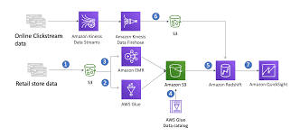

This project leverages SQL to analyze global COVID-19 data, focusing on death rates and vaccination
trends. It explores key metrics such as death percentages, population impact, and vaccination coverage
across continents, providing insights into the pandemic's progression using advanced queries and
Common Table Expressions (CTEs).

Designed a database schema for 15 business functions of Best Buy using Erwin Data Modeler.
Forward-engineered and integrated the schema into a centralized MySQL database via MySQL Workbench.
Queried and validated the business functions using PostgreSQL to test database functionality and
generate insights.

Analyzed Coca-Cola's financial health by examining its balance sheet, income statement, and key ratios.
Utilized financial models to assess performance and identify success drivers.
Made investment recommendations based on findings, using CAPM to evaluate its investment potential.

Designed a data warehouse for Amazon using dimensional modeling techniques like Bus Matrix, star schema, and conformed dimensions for e-commerce data analysis. Built the warehouse schema with SQL and developed interactive Tableau dashboards
to provide insights for sales, marketing, product, operations, and customer service teams.

This project classifies three types of brain tumors—meningioma, glioma, and pituitary tumor—using VGG-16 and MobileNets with the Keras API.
The performance of both classifiers was evaluated using accuracy and confusion matrix.

Developed a program to detect fraudulent transactions using credit card data. Addressed data skewness with Random Under Sampling, Random Over Sampling, and SMOTE methods.
Applied logistic regression, random forest, Gaussian Naive Bayes, KNN, and SVM to classify fraud
Analyzed data from the Netherlands Cancer Registry to investigate factors influencing breast cancer survival rates. Used SAS for advanced statistical methods like factor analysis and logistic regression to identify key determinants affecting outcomes.
Developed detailed reports to communicate findings on critical factors impacting breast cancer mortality.